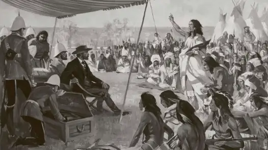

Why it was Signed
In the mid 1870s, the Indigenous people of Lake Winnipeg saw what the
other Indigenous nations were getting from signing treaties 1-4. They
asked the Canadian government for economic assistance.
Treaty 5 was signed for these reasons
- To get economic assistance
- The Government wanted to get more land for expansion
- Both sides wanted to avoid conflict
Treaty 5 wasn't negotiated in 1 place, it happened in a lot of places.
Some locations are the Norway House, Grand Rapids, Berens River, The Pas
and Split Lake (Also known as Tataskweyak Cree Nation). The treaty was
signed in 1875, but the last location (Split Lake) was signed in 1910.
The reason the treaty was signed in multiple locations is because the
First Nations lived in communities far apart, so the commissioners went
to each individual community to sign the treaty.

Historic Terms of the treaty
The Government of Canada offered the following to the Indigenous
nations:
- Each person received $5 per year
- Chiefs received about $25 a year
- Headmen received about $15 a year
The First Nations people were also given reserve land. About 160 acres
per family of 5. The First Nations people could continue to hunt, fish
and trap, but only on land unoccupied or not in development.
What Makes Treaty 5 different?
The Treaty 5 area was covered in forests and rivers and lakes, so First
Nations in that area relied more on fishing and hunting rather than
farming. Additionally, Treaty 5 was first signed in 1875, but the treaty
expanded later on in 1908, which meant other communities joined later.
The First Nations people weren't given the full details of the treaty.
Goverment representatives tried to offer them less favorable conditions
and promises weren't kept fully.
How is Treaty 5 still being implemented today?
Treaty 5 is still being implemented today in multiple ways. First of
all, the First Nations people continue to be paid $5 per year (same as
1800s.) Government of Canada have to still ask the First Nations people
before they can use the land for development. The Indigenous people
still have the rights to hunt, fish and trap without being disturbed.
First Nations have more control over Education, Land management and
decisions.